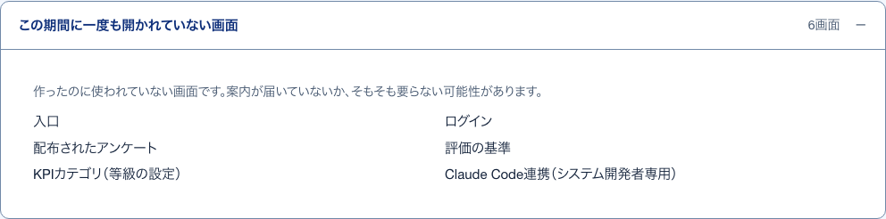
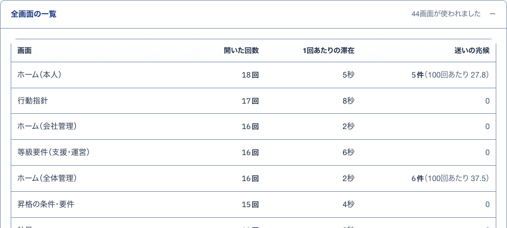
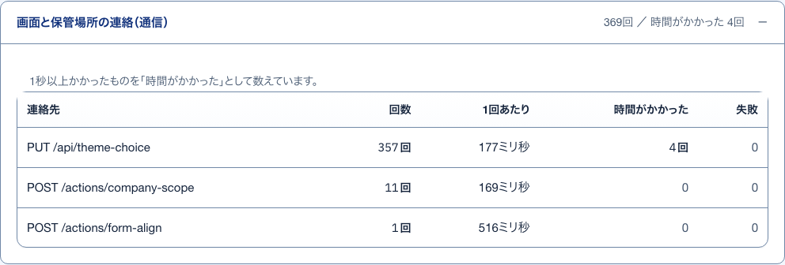

18条件の説明説明
S08 権限一覧 ・ 押すもの: 「アンケート1本の説明」 ・ 閉じる: Esc
中に出るもの
- その役割で、どんな条件のときにできるかの文
19開かれていない画面開いて見る
S09 利用状況 ・ 押すもの: 「この期間に一度も開かれていない画面」

中に出るもの
- 作ったのに使われていない画面だという説明
- 画面の名前の一覧
20全画面の一覧開いて見る
S09 利用状況 ・ 押すもの: 「全画面の一覧」

中に出るもの
- 画面
- 開いた回数
- 1回あたりの滞在
- 迷いの兆候（100回あたり）
21通信開いて見る
S09 利用状況 ・ 押すもの: 「画面と保管場所の連絡（通信）」

中に出るもの
- 1秒以上かかったものを数える説明
- 連絡先
- 回数
- 1回あたり
- 時間がかかった
- 失敗
22端末を通す前の確認押したあとに出る
S10 Claude Code連携 ・ 押すもの: 「合言葉を確かめる」 ・ 閉じる: 通さない
中に出るもの
- 「端末名」（合言葉）を通しますか。
- 通すとこの端末は要望を読めるようになる注意
中で押せるもの
- この端末を通す: 端末を通し「通した端末」に並べる
- 通さない: 通さずに確認をやめる
23発行した鍵押したあとに出る
S10 Claude Code連携 ・ 押すもの: 「鍵を発行する」 ・ 閉じる: 控えました。表示を閉じる ・ 押すと保存や送信が起きるので、写真は載せていない
中に出るもの
- この画面を閉じると鍵をもう一度表示できない注意
- 開閉「鍵を見る」「貼る文言を読む」「.env.local へ書く1行を読む」
中で押せるもの
- 鍵をコピー: 鍵を写す
- Claude Code へ貼る文言をコピー: 貼る文言を写す
- .env.local へ書く1行をコピー: 設定の1行を写す
- 控えました。表示を閉じる: 表示を閉じる。二度と出せない